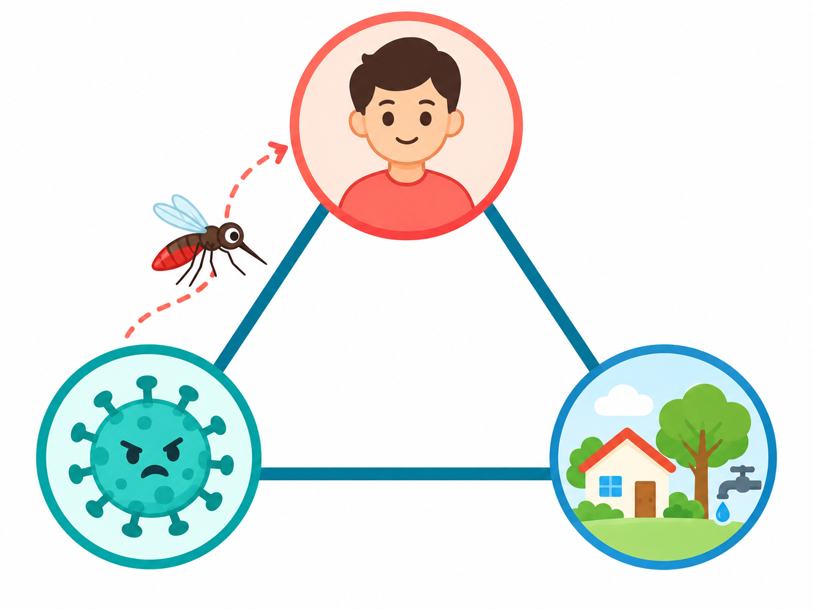

Why do some people get sick while others stay healthy? Why did a disease suddenly appear in one town and not the next one? And what can we actually do to stop it? These are the questions behind epidemiology, and this post is a friendly first step into the subject. No background needed, just curiosity.
Epidemiology did not appear overnight. It grew slowly, one clever idea at a time. Here are the milestones worth knowing:
| Year | Who | What happened |
|---|---|---|
| 400 BC | Hippocrates | Wrote "On Airs, Waters, and Places" and suggested that disease might be linked to the physical environment. |
| 1662 | John Graunt | Published "Nature and Political Observation Made Upon the Bills of Mortality", the first use of quantitative methods to describe a population's vital statistics (births, deaths, and so on). |
| 1854 | John Snow | Tested the idea that cholera spread through contaminated water, using an epidemiological experiment. |
| 1950 | Francis et al. | Ran a field trial of the polio vaccine in school children. |
| 1950 | Doll & Hill | Used a case-control study to describe and test the link between smoking and lung cancer. |
| 1955 | Dawber et al. | Used a cohort study to find the risk factors for cardiovascular disease (the Framingham Heart Study). |
Notice the pattern: first people counted things (Graunt), then they tested ideas about causes (Snow), and later they built whole study designs to answer health questions (the 1950s studies). We will meet those study designs in later posts.
Epidemiology is a core discipline of public health. It gives us a way of thinking, and a set of methods, for any situation where we need solid evidence about health and wellbeing.
The word itself breaks down nicely:
So epidemiology is literally "the study upon the people": studying health in groups of people, not just in one patient at a time.
Because health problems come in many forms, epidemiology has many branches (sub-disciplines), for example:
Whatever the branch, they all rest on two core ideas: distribution and determinants. Let's look at each.
The first idea is that diseases do not occur in a random fashion. They cluster. Some groups, places, and periods are hit harder than others. Distribution simply asks: who is developing the disease, where, and when?
Epidemiologists answer this by describing disease in terms of three things:
Think of it like a detective's first notes at a crime scene: who, where, when. You cannot solve the case yet, but you now know where to look.
The second idea is that diseases have multiple determinants. In other words, there is rarely just one reason someone gets sick. Determinants are the factors that influence whether disease happens. This is the "why" question.
A classic way to organise these factors is the epidemiological triad. It says disease results from the interaction of three things:

Here is what usually belongs in each corner:
| Corner | Examples |
|---|---|
| Host | Age, sex, race, occupation, genetic profile, medical history, immune status, customs, marital status, family history |
| Agent | Biological (bacteria, viruses, fungi), chemical (toxins, poisons), physical (radiation, fire) |
| Environment | Humidity, temperature, altitude, crowding, housing, water supply, food supply, pollution |
There is also a helper that sits between the agent and the host in many infectious diseases: the vector. A vector is a living carrier that transmits the agent, such as a mosquito carrying malaria.
The key message of the triad is balance. If something changes in one corner (a new virus appears, people become more crowded, immunity drops), the balance shifts and the amount of disease goes up or down. Understanding the triad also shows us where we can step in to protect people.
So what do we actually get from all this? Epidemiology gives us four main things:
Each of these answers a different practical question: "What is the problem?", "What is causing it?", "What will happen next?", and "Is our solution working?"
Epidemiology comes in two flavours, depending on the question being asked.
Descriptive epidemiology describes. It tells us the health status of a population (person, place, time) and helps us understand the natural history of diseases. It answers "what is happening?"
Analytical epidemiology investigates. It looks for causes, and it checks whether treatments or prevention programmes really work. It answers "why is it happening?" and "does this intervention help?"
| Descriptive | Analytical | |
|---|---|---|
| Main purpose | Describe the health status of a population | Assess causes and the effectiveness of interventions |
| Typical question | Who, where, when? | Why? Does it work? |
| Also helps with | Understanding the natural history of disease | Evaluating preventive measures, programmes, or treatments |
Here are the kinds of questions an analytical study asks about smoking and ischaemic heart disease (IHD):
Notice how each question goes beyond simply describing who has IHD. They compare groups and look for a cause.
All of this counting, comparing, and explaining has one final purpose: prevention. We study the distribution and causes of disease so we can stop people from getting sick, or at least limit the harm. That is why epidemiology is so closely tied to public health.
Over the years, many people have tried to define epidemiology in a sentence. Here are a few, in order of when they appeared:
The most commonly used definition today is this one:
"The study of the distribution and determinants of health-related states or events in specified populations, and the application of this study to control of health problems." (Porta, 2008)
It looks long, but it is easy to unpack:
| Phrase in the definition | What it means in plain words |
|---|---|
| Distribution | Who gets it, where, and when (person, place, time) |
| Determinants | The factors that cause or influence it (host, agent, environment, vector) |
| Health-related states or events | Not only diseases, but any health outcome |
| Specified populations | We study defined groups of people, not individuals |
| Application to control of health problems | The knowledge must be used to prevent and control disease |
This post is only the doorway. Epidemiology branches out into many topics, which we will cover one by one in this series:
Want to read further? These are good starting points:
Epidemiology is the study of health in groups of people. It describes who gets sick, where, and when (distribution), and it explains why (determinants) using ideas like the host-agent-environment triad. Descriptive epidemiology tells us what is happening, while analytical epidemiology tests causes and checks whether interventions work. And everything points to one goal: preventing disease and protecting health.
Quick self-check: Can you explain the difference between descriptive and analytical epidemiology in your own words? Can you name three common uses of epidemiology? If so, you have the foundations.
Describe the pattern. Find the cause. Prevent the disease.